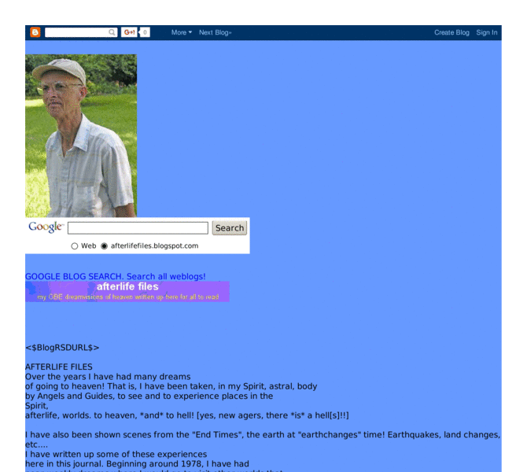

Previewing: afterlife files Previewing: afterlife files 
Use the left/right red arrow controls to navigate through this ring - Click the preview image to visit the member site.

On this Ring, I have a Journal, "my life after near death experiences". Some of my "NDE" visions are written up, where you can read them, here.
afterlife files owned by:
 freestonew freestonew
A member of the original webring since 08/20/2003.
|
|